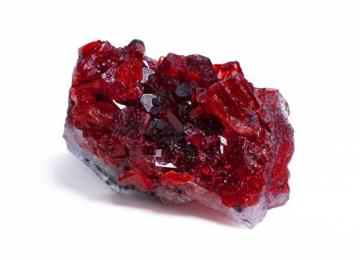
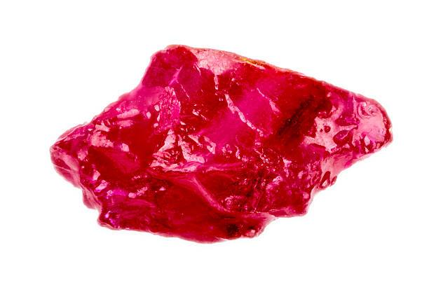
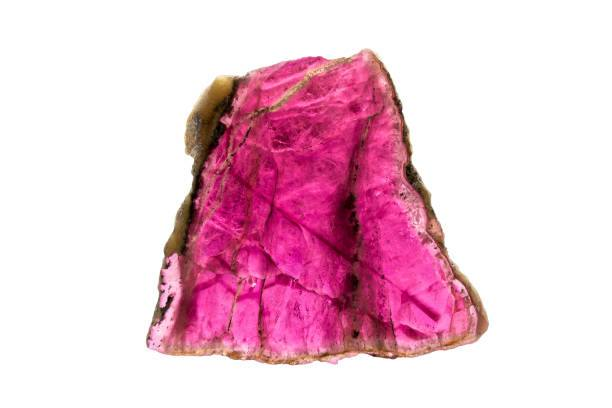

الياقوت (Ruby)
- المصدر: ميانمار، تايلاند، مدغشقر.
- الخواص:
- صلب (9/10 على مقياس موهس)
- لونه أحمر غني بسبب وجود عنصر الكروم
- ينتمي لعائلة الكورندوم
- الاستخدامات: يُستخدم في المجوهرات الملكية، ويرمز للحب، الشجاعة، والقوة.
- الألوان المتوفرة: درجات الأحمر فقط.
- أكثر لون نادر: الأحمر القاني (دم الحمام).
- أكثر لون شائع: الأحمر الوردي.


